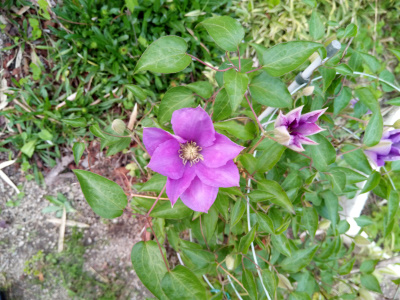
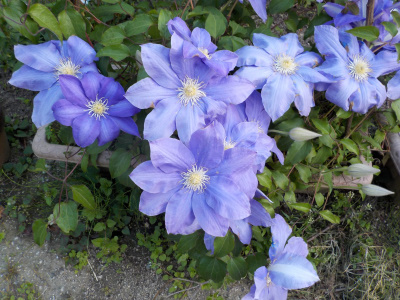
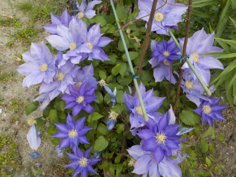
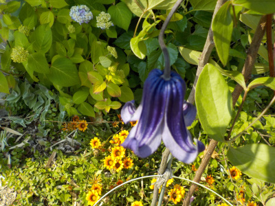
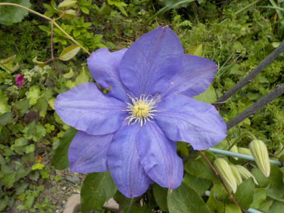
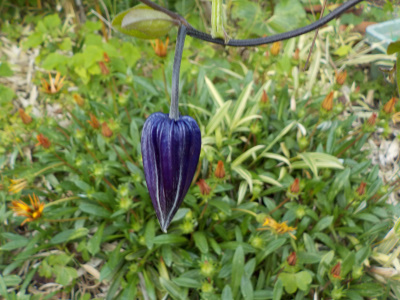
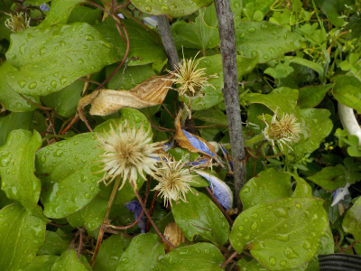
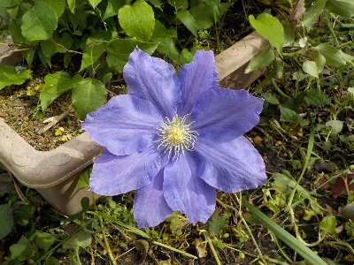
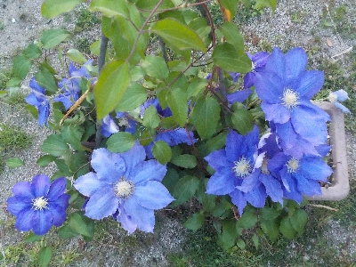
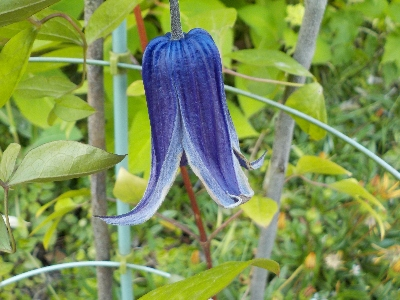

今年のクレマチスは赤紫です。
更新日: 2022/04/27

今までずーっと青紫の花だったんですが、今年はなぜか赤紫で咲きました。
これはこれでキレイでいいかな。あと、花の大きさがちょっと小さいかな。
更新日: 2022/04/27

今までずーっと青紫の花だったんですが、今年はなぜか赤紫で咲きました。
これはこれでキレイでいいかな。あと、花の大きさがちょっと小さいかな。
更新日: 2022/05/05

このプランターは今年も青い花が咲きました。
今の時期は色んな花が咲いていますが、これが一番目立つみたいです。
更新日: 2022/05/08

ピークを越えて花が散りだしました。それでも沢山咲いているのでまだまだキレイです。
このプランターの株は年々大きくなっていて花の数が増えていますが、これくらいが限界かな？
このクレマチスは母の日くらいに咲くのでとってもいい。なんかの原因で枯れてもいいように、挿し芽して予備を作っておきたいです。
更新日: 2022/05/22

篭口の花が1つ咲いたんですが、花がとても大きいです。
1つだけなので、栄養が集中して大きくなったのかな？
いつもこれくらい大きいと花が目立っていいんだけどな。
更新日: 2023/04/23

花が大きいので見ごたえがあります。
このタイプは日本の種類でカザグルマって言うみたいです。
更新日: 2023/05/08

もうちょっとで開きますね。明日には咲くかな。
梅雨になったら挿し芽をしようかと思っています。
更新日: 2023/05/13

篭口は少し咲いていますが、カザグルマは終わりました。
クレマチスは母の日の咲いてて欲しい花なんですが残念です。今年は第二日曜日が14日で遅かったので仕方ないかな。
更新日: 2024/04/27

大きな花が咲きました。見事ですね。
このプランターは5年以上植えっぱなしなので、もう植え替えした方がいいんだろうな。
更新日 : 2024/05/03

今年もキレイに咲きました。
後は散るだけか。
更新日: 2024/05/15

シーズンのはじめなので花が大きいです。
これからだんだん花が小さくなるってコトは肥料が足りないのかな？
わかんないですね。今がいい季節だから花が大きいのかもしれない。
温暖化が母の日のクレマチスの邪魔をしている。